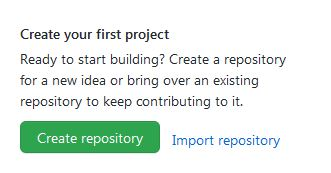
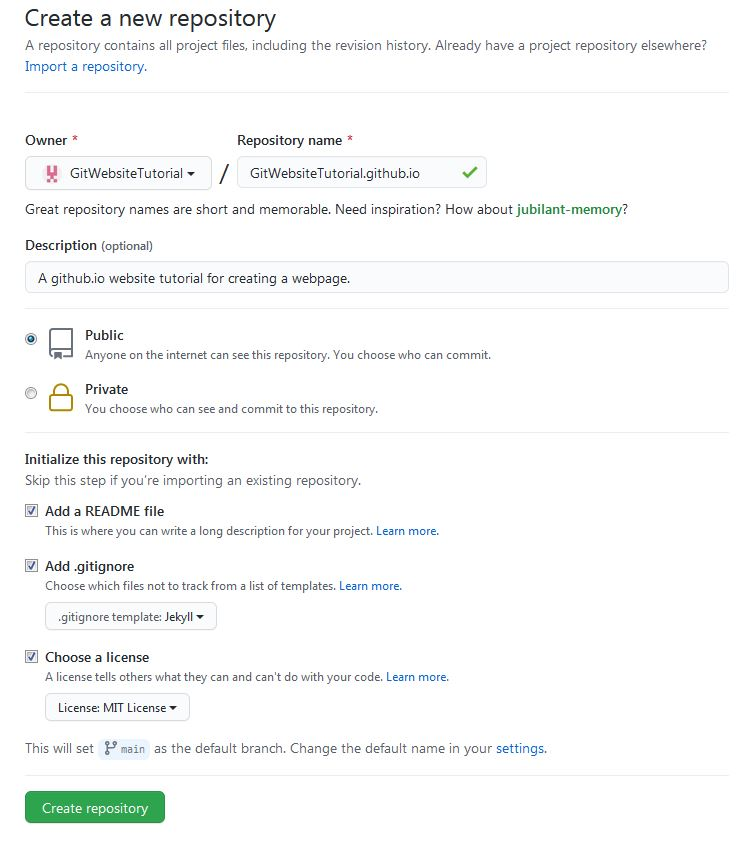
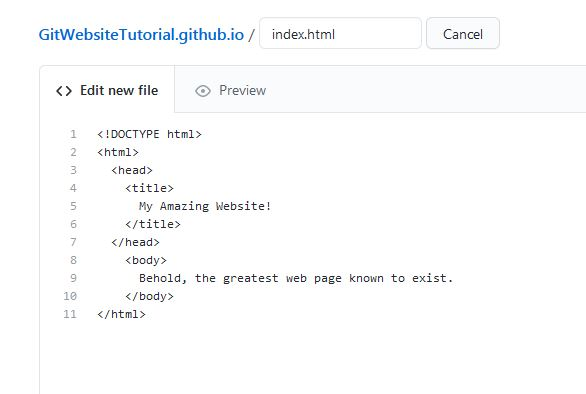
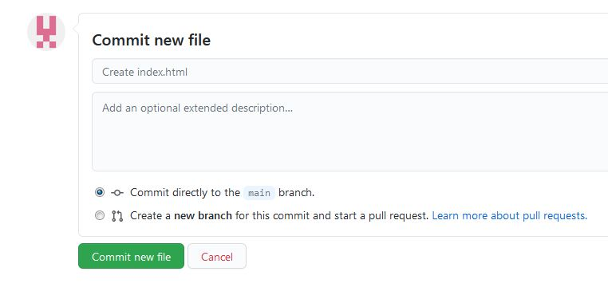

Created by: Antonius Torode - 1/5/2021
Before beginning: Make sure you have some hot tea or some water nearby. You can be much more productive if you do not have to get up when getting thirsty and also tea is amazing. I typically make a vanilla-almond chai with a little bit of honey which is quite delicious. I make a thermos full and keep my mug half full that way it is always warm. :) I would also recommend some non-distracting music to play in the background. One of my favorites for things like this can be found at this link: super cool music.
The first step to making a website is determining how you will host it. The website needs to be running on a computer (server) and available for others to connect to. In general, hosting services have a cost, but I happen to know of a good one that is free (which is what this tutorial uses). The only drawback is that your website code will be public information that anyone can access.
Head over to https://github.com/ and proceed to the sign up page. The user name will be the first part of your website URL, so make sure to pick something you like (For example, with a user name of "PotatoWedges", your web page URL will be "potatoWedges.github.io". Create an account using your desired credentials. I would recommend a strong password containing letters (capitalized and lower case), numbers, and symbols that only you know. Anyone with access to your github account will also be able to modify your web page.
Sign into your github account and navigate to the homepage (If this is your first account, the page it takes you to after verifying your email). There should be a "Create a repository", "Create repository" or a "new" button (see image below) located either in the middle (newbies) or next to a list of repositories (experienced git humans).
The repository name (see image below) must be your user name and must end with "github.io". This will ensure it is a static web page that github will host for you (for free!). For example, you can do something like "FishFilet.github.io" if your user name is "FishFilet". The description can be whatever you would like, and you should check the "Add a README file" and "Add .gitignore" check boxes. You can also choose a license if you want to set up what others are allowed to use your website code for.
A README file is just a general text file that is used to explain to others what is found in this repository. It is not particularly needed for a website, however, it makes setting up the repository easy since there is already a file in the repository.
The .gitignore file will tell git which files you do not want to upload to the git server from your local copy of the repository. Select "Jekyll" in the dropdown menu.
Select the Create repository button.
Congratulations, you have created a place on the github server for your website to live! And now, time to pour a bit more delicious tea. :)
After creating the repository, you should see a link to a nice little Github guide. Reading through this guide will be handy to get an initial grasp of using github and is recommended (As it will be used later). I would suggest opening it in a new tab to look through. Though, there are only really a few basics you 'need' for a website, which I will also cover later.
Before getting into any of the fancy technical stuff though, let us create out web page in the most simplest way possible. On that same initial page. of your repository (which can be accessed any time by simply clicking on the repository in github), select the "add file" button then "Create new file". Name your file "index.html". This will be the main homepage for your website.
In the "Edit new file" field below (which kind of looks like any ol' text editor), enter the following:
<!DOCTYPE html>
<html>
<head>
<title>
My Amazing Website!
</title>
</head>
<body>
Behold, the greatest web page known to exist!
</body>
</html>

Down below the editor (see image below). You can enter a description of what you are adding to your repository or leave the default alone. Then select "Commit new file". Now, wait a moment (perhaps 30 seconds to drink some tea). Then in a separate browser tab, enter the URL of your website (i.e. DeliciousTea.github.io), and behold! Your website should display.
Congratulations on creating your first webpage.